第28回
高校の授業に企業が参加する時代へ｜姫路商業のPBLから考える企業連携
姫路商業高校のPBLを例に、専門高校と企業が連携する授業の意味をREVIA代表が考えます。地元レストランとの商品開発・販売が生徒の学びや地域活性化にどうつながるのか。高校生に任せる範囲と企業が担う責任、失敗から学ぶ機会について綴ります。
続きを読むREVIA column
REVIA代表・原田靖也が、勉強や受験のこと、教育への考え、地域での活動や日々の出来事を通して感じたことを綴ります。
Latest
第28回
姫路商業高校のPBLを例に、専門高校と企業が連携する授業の意味をREVIA代表が考えます。地元レストランとの商品開発・販売が生徒の学びや地域活性化にどうつながるのか。高校生に任せる範囲と企業が担う責任、失敗から学ぶ機会について綴ります。
続きを読む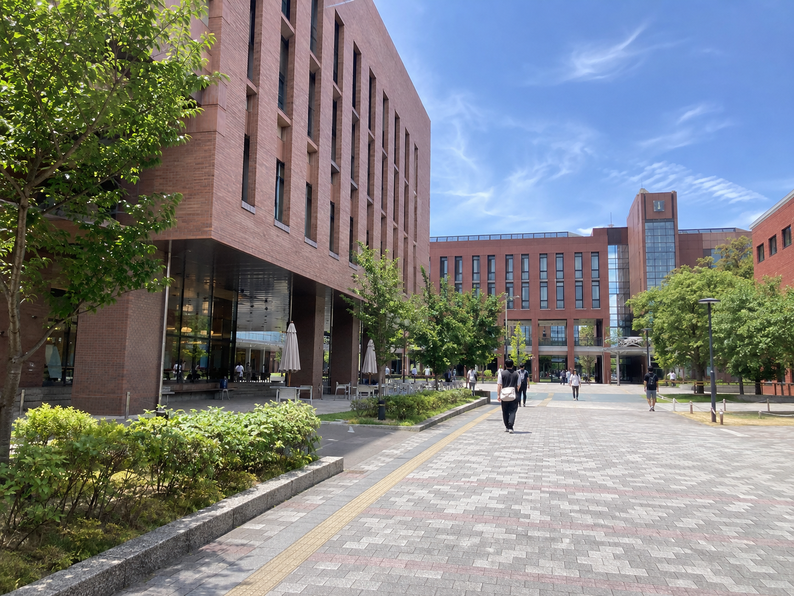
第27回
総合型選抜に向けて、面接や小論文の対策より先に考えたいことをREVIA代表が指導経験から解説。大学のアドミッション・ポリシーと志望理由のつながり、読書や考えを伝える練習、国公立大学を目指すなら一般選抜の勉強を続ける理由を紹介します。
続きを読む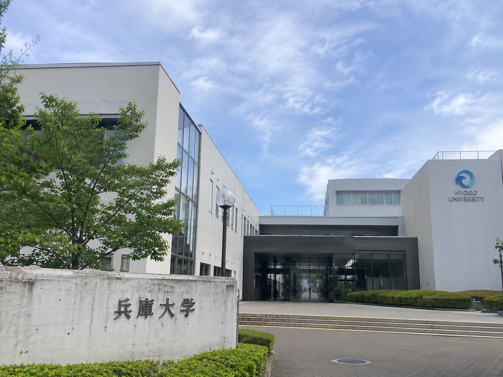
第26回
奨学金を世帯年収だけで諦める前に、JASSOの給付奨学金や多子世帯の授業料等減免を確認しませんか。給付型奨学金を自分で調べる大切さと、貸与型奨学金を借りる前に考えたい返還額、第二種の繰上返還、生活を守る返還方法についてREVIA代表が綴ります。
続きを読む
第25回
次期学習指導要領で議論される「余白」と「精選」から、学習内容と授業の進め方を考えます。中学生の理科・社会の復習や兵庫県公立高校入試の出題例にも触れ、内容を増やすだけでなく、繰り返し学び、確実な理解につなげる時間の大切さをREVIA代表が綴ります。
続きを読む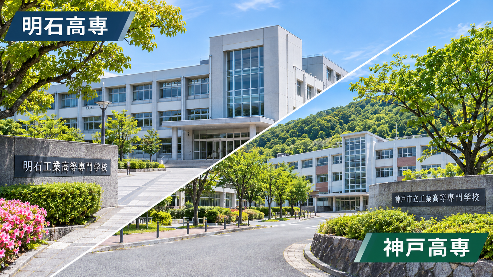
第24回
高専は就職に強いのでしょうか。舞鶴高専機械工学科の求人倍率37.8倍を、高校卒3.60倍、大学・大学院卒1.62倍と比較。集計方法の違いや5年間の専門教育、大学編入の道にも触れながら、理科・数学やものづくりが好きな中学生の進路をREVIA代表が考えます。
続きを読む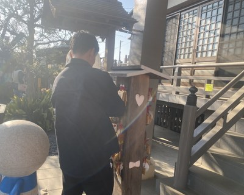
第23回
テストの点数が伸びないときは、難問より先に基礎問題の失点を確認してみてください。単語・計算・漢字などの間違いの原因を分け、覚え直しや解き直し、時間配分の見直しなど、次にやる勉強を具体的に決めるための答案の振り返り方を、REVIA代表が紹介します。
続きを読む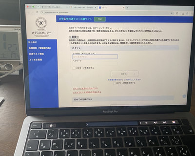
第22回
共通テストの科目選択や配点は志望大学に合っていますか。第1解答科目、情報Ⅰ、共通テスト利用と併用、募集要項で確認すべき項目をREVIA代表が紹介します。
続きを読む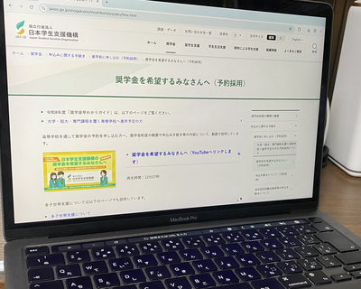
第21回
大学の奨学金はいつ申し込むのか。JASSOの予約採用・在学採用、入学前の資金準備、給付型と貸与型、民間の支援制度を、REVIA代表の経験を交えて紹介します。
続きを読む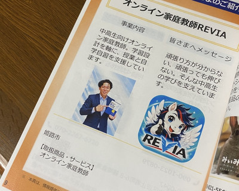
第20回
勉強しているのに成績が上がらない中学生・高校生へ。学習時間の使い方、何も見ずに解く練習、時間を空けた復習、授業の振り返りをREVIA代表の実践と研究から紹介します。
続きを読む第19回
探究学習のテーマが決まらない高校生へ。身近な不便や疑問から問いを見つけ、他の人への影響を考えること、AIの活用と自分で構想する大切さをREVIA代表が語ります。
続きを読む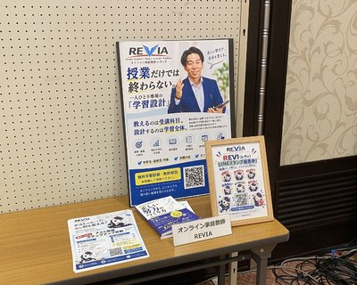
第18回
模試がD判定・E判定だった受験生へ。得点と失点単元の確認、正答率50％超の問題を優先する復習、追加演習する問題の選び方、志望校・併願校の考え方をREVIA代表が紹介します。
続きを読む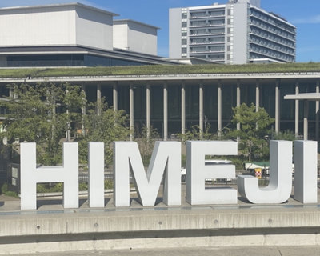
第17回
大学選びで偏差値以外に大切にしたいことをREVIA代表が解説。理系の研究内容、文系の留学制度、大学生活で身につけたい力、自分が学びたいことに沿った進路選択を考えます。
続きを読む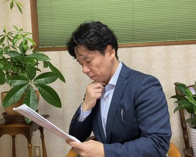
第16回
国公立大学の推薦・総合型選抜。高1・高2・高3で検討すべきことと、一般選抜との両立、合格後の進学意思について解説します。
続きを読む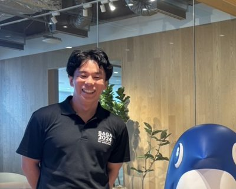
第15回
東大阪市が予定する塾や習い事の費用助成を紹介し、子どもの学校外での学びや経験の機会を支える意味を考えます。
続きを読む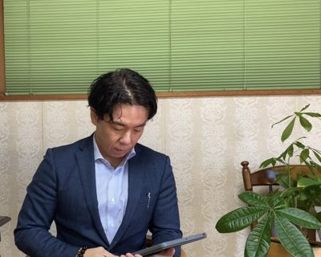
第14回
兵庫県公立高校入試の実技4教科の内申点、自分で学ぶ習慣、家庭の優先順位や通学条件を踏まえた高校選びについて考えます。
続きを読む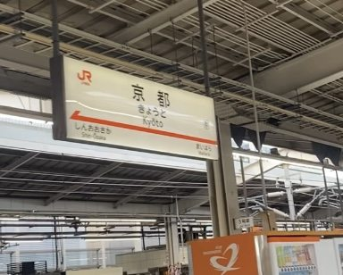
第13回
2027年度共通テストに向けて、受験票の印刷や試験会場への移動経路など、勉強以外に確認しておきたい準備を紹介します。
続きを読む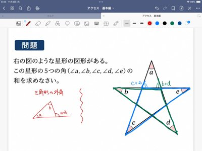
第12回
図形問題が苦手な人へ。大きな図を描き、補助線を試す練習やタブレットの活用について、REVIA代表が指導経験をもとに紹介します。
続きを読む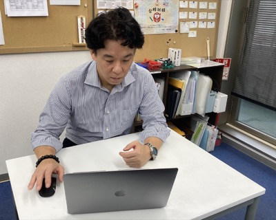
第11回
主体的に学ぶ力はどう育つのか。次期学習指導要領やAI時代の学びを踏まえ、オンライン家庭教師REVIA代表が指導経験をもとに考えます。
続きを読む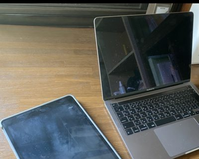
第10回
デジタル教科書や動画、AIで理解しやすくなる時代に、「わかる」と「できる」の違いをどう意識するか。解説を閉じて自分で再現する勉強の大切さを、REVIA代表・原田靖也が綴ります。
続きを読む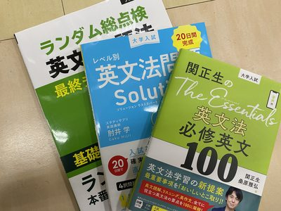
第9回
英作文で手が止まる中学生・高校生へ。難しい日本語を簡単に整理し、知っている単語と文法で正確に伝える勉強法と3つの手順を、REVIA代表・原田靖也が紹介します。
続きを読む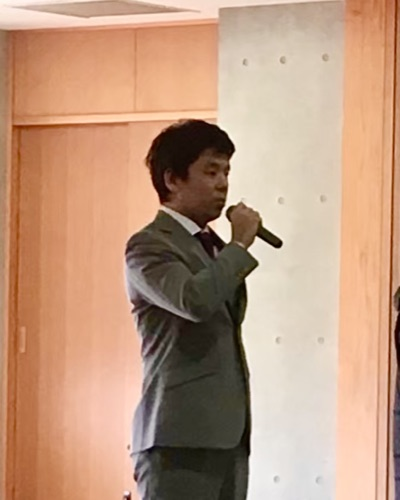
第8回
2026年度に拡充された高校生等奨学給付金と授業料支援、兵庫県の申請期限を紹介。費用で進路を諦める前に確認してほしいことを、REVIA代表・原田靖也が綴ります。
続きを読む第7回
2027年度「トビタテ！留学JAPAN」高校生等対象プログラムの募集コース、奨学金、応募日程と、留学前に準備しておきたいことをREVIA代表・原田靖也が紹介します。
続きを読む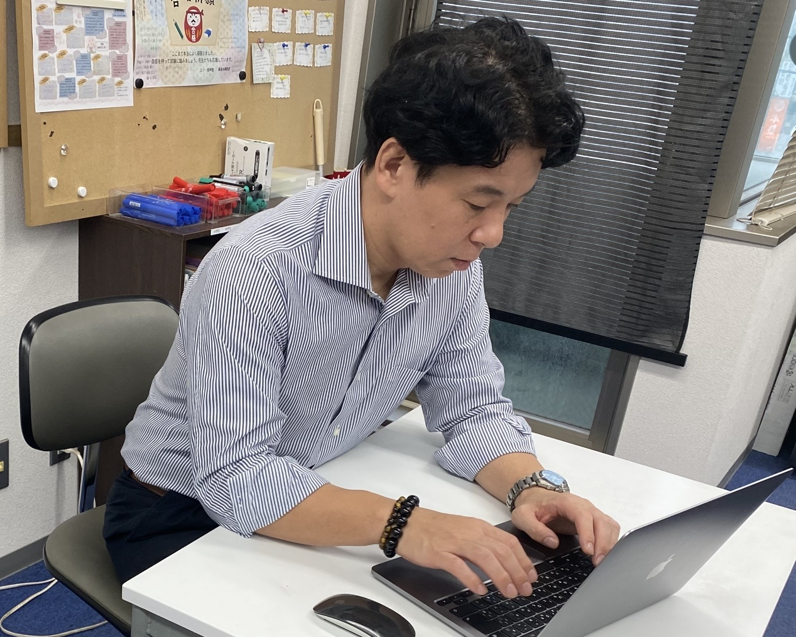
第6回
2027年度大阪府公立高校入試の最新情報を確認しながら、内申点が伸びないときの原因分析と受験戦略、偏差値だけに頼らない志望校選びについて、REVIA代表・原田靖也が解説します。
続きを読む第5回
2027年度の国公立大学入試の最新情報を整理し、一般選抜・総合型選抜・学校推薦型選抜の選び方と、高校1・2年生が今取り組みたい英語・数学の勉強について、REVIA代表・原田靖也が解説します。
続きを読む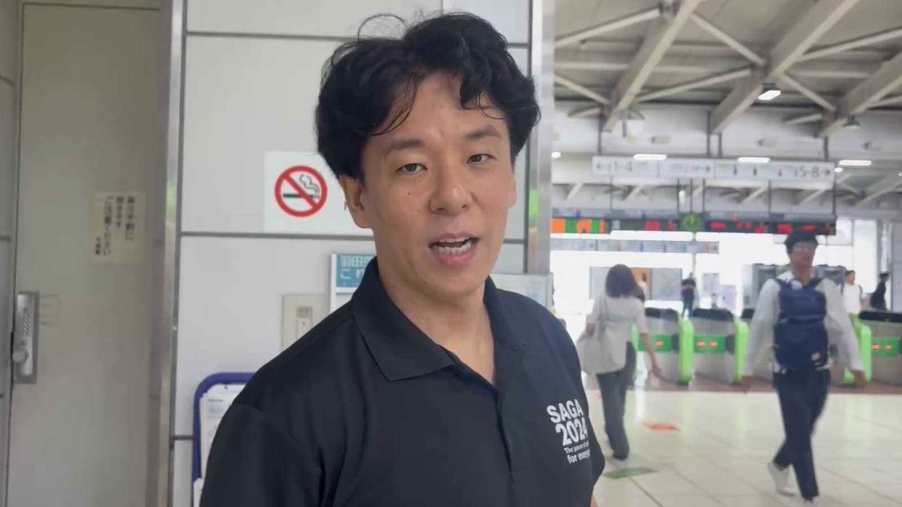
第4回
志望校を決める時期と、本番までの戦略や心の準備について。一人の教え子の事例と指導経験をもとに、REVIA代表・原田靖也が考察します。
続きを読む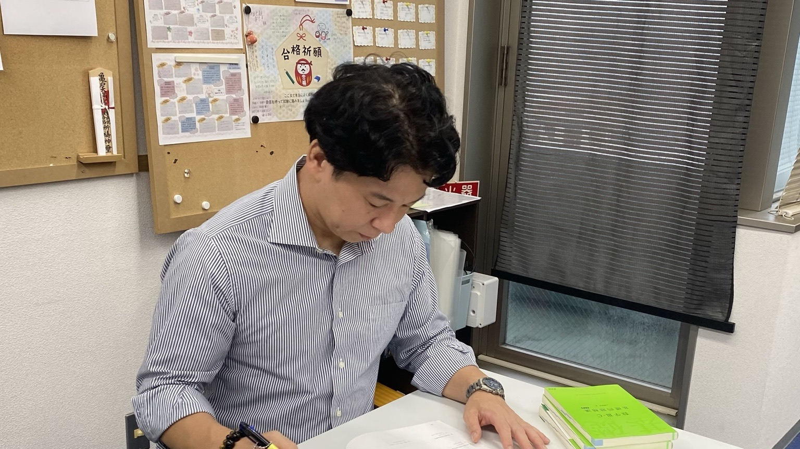
第3回
介護タクシーの開業を目指す人との出会いから、経験や強みを組み合わせて挑戦することの面白さを綴ります。
続きを読む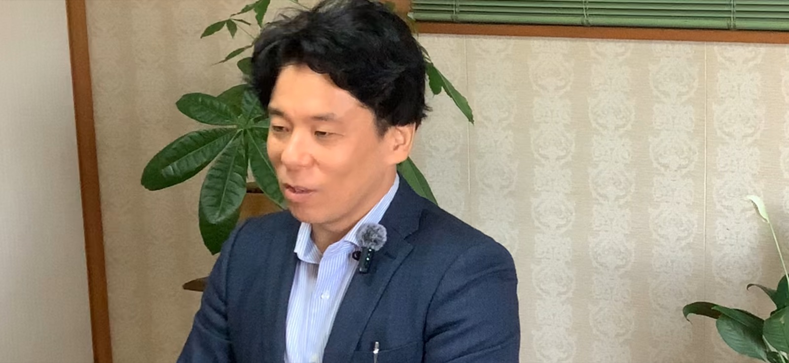
第2回
2学期の模試やテストをどう捉え、結果から次の行動へつなげるか。大学受験生から中学1・2年生まで、学年別の秋のチェックポイントをお話しします。
続きを読む第1回
夏休みに思うように勉強できなかった人へ。現在地と期限を確認し、残された時間から学習を立て直すための7つのポイントをお話しします。
続きを読む